กิจกรรมต่างๆ
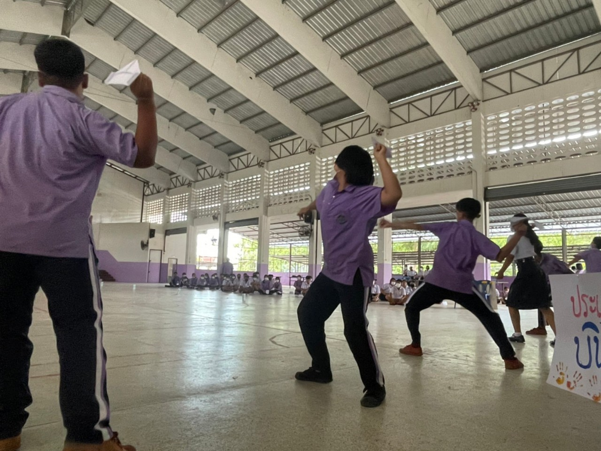
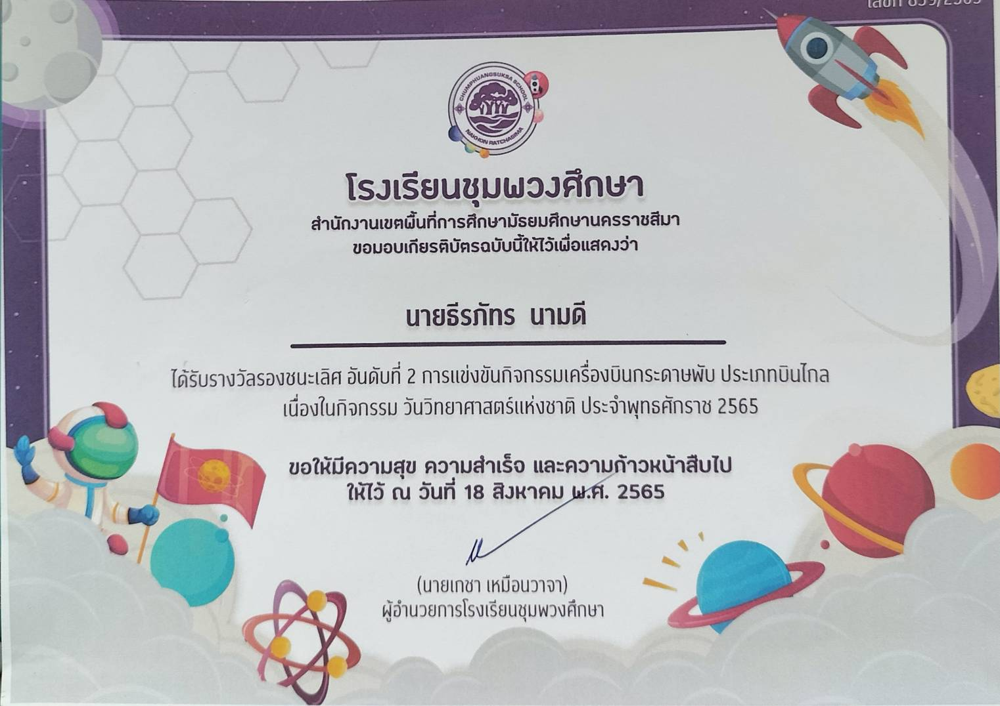
18 สิงหาคม 2565
ได้เข้าร่วมการแข่งขันกิจกรรมเครื่องบินกระดาษพับ เนื่องในโอกาสวันวิทยาศาสตร์แห่งชาติ ประเภท บินไกล ได้รางวัลรองชนะเลิศ อันดับที่ 2
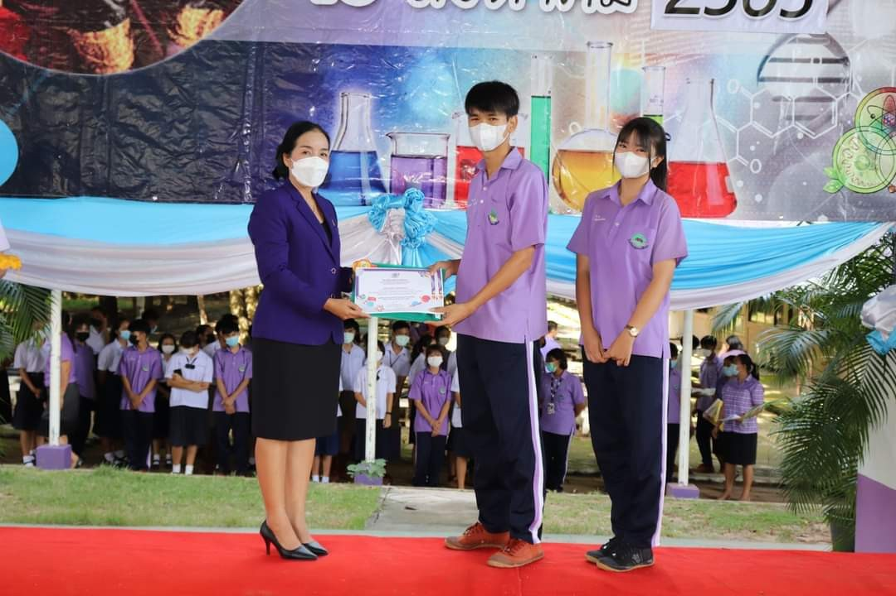
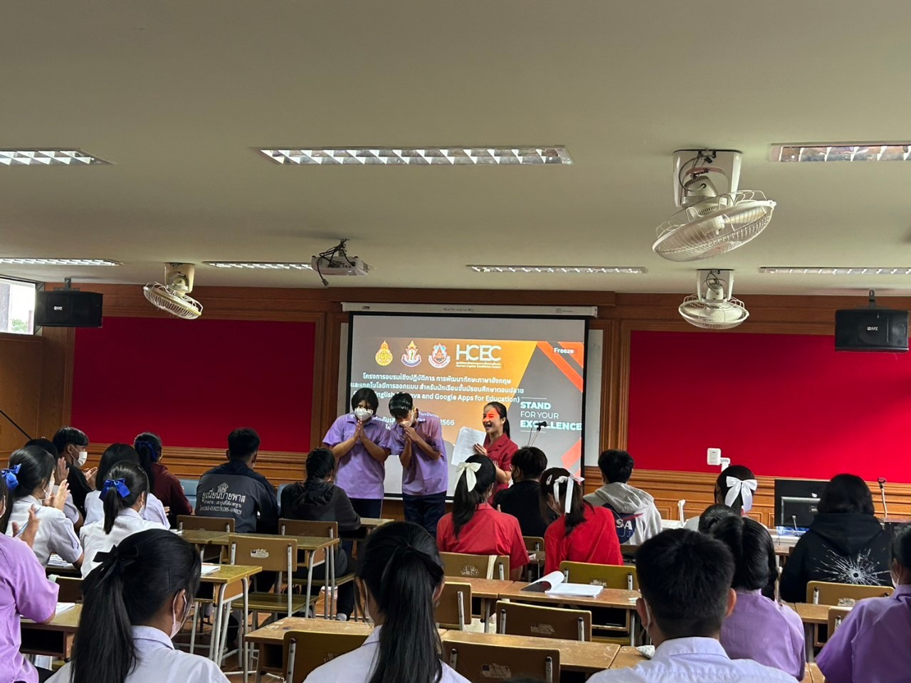
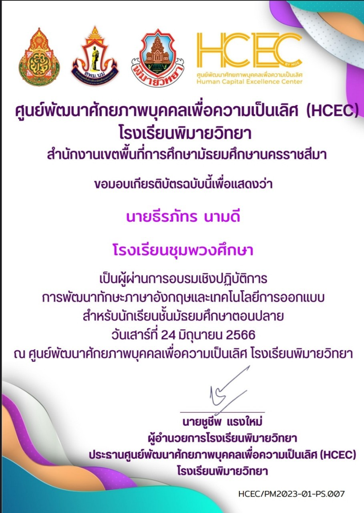
24 มิถุนายน 2566
ได้เข้าร่วมการอบรมเชิงปฏิบัติการ การพัฒนาทักษะภาษาอังกฤษและเทคโนโลยีการออกแบบสำหรับนักเรียนชั้นมัธยมศึกษาตอนปลายที่โรงเรียนพิมายวิทยา
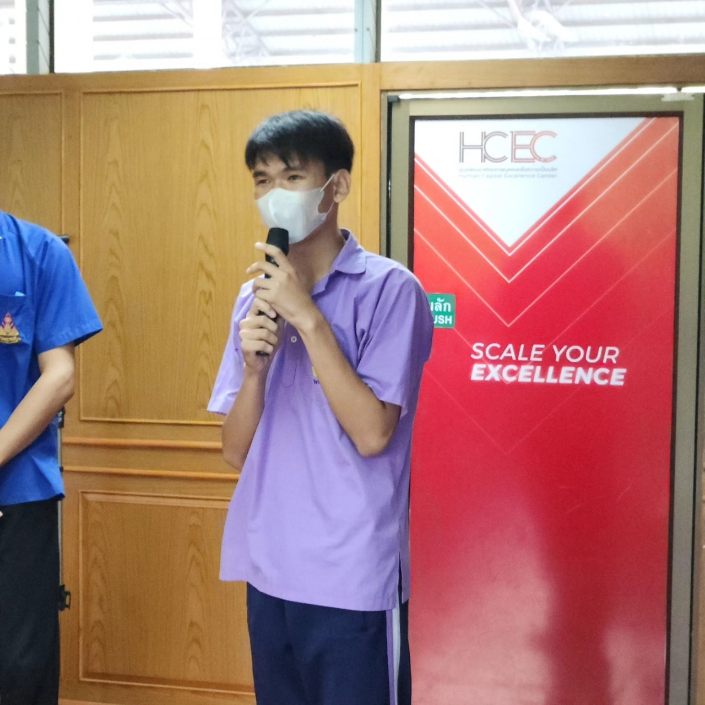
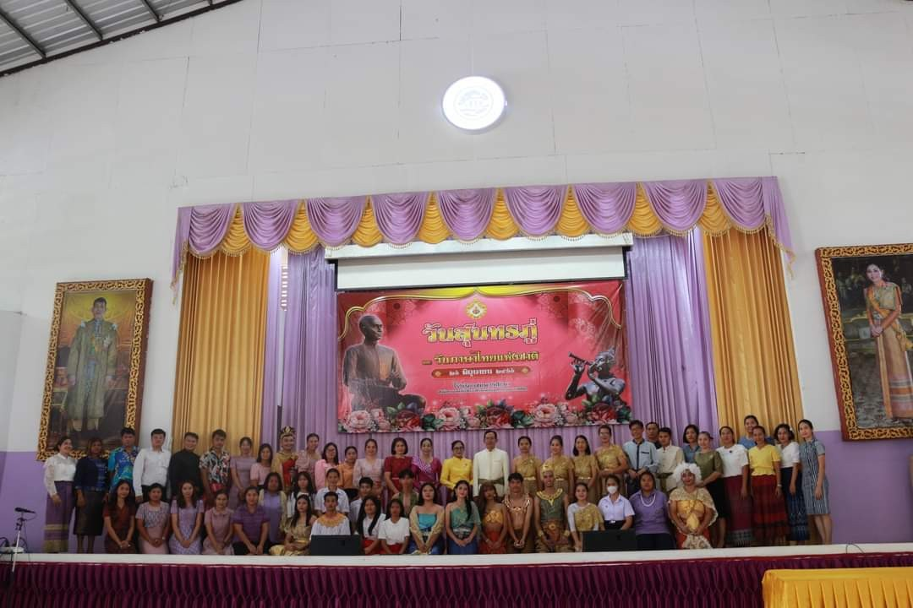
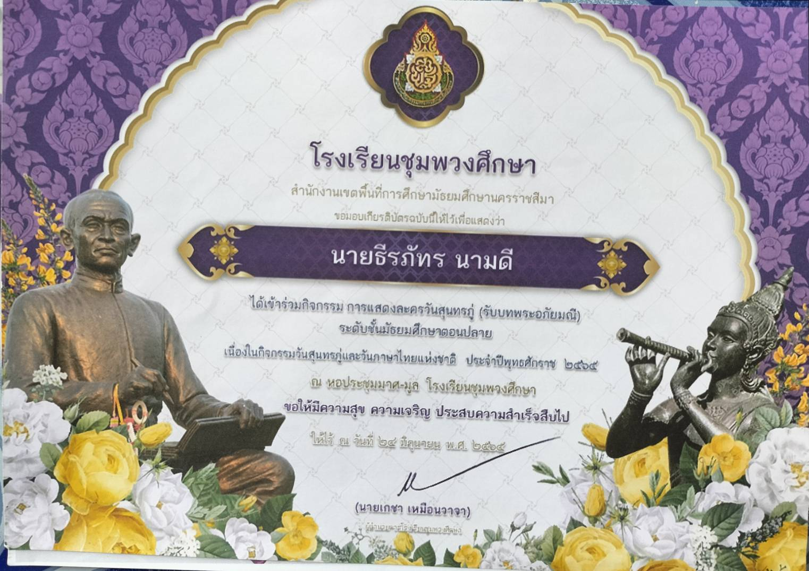
วันที่24 มิถุนายน 2565 และ วันที่26 มิถุนายน 2566
วันภาษาไทยแห่งชาติได้รับหน้าที่การแสดงละครเป็นพระอภัยมณี 2 ปีพุทธศักราช คือ พุทธศักราชที่2565 และ พุทธศักราชที่2566
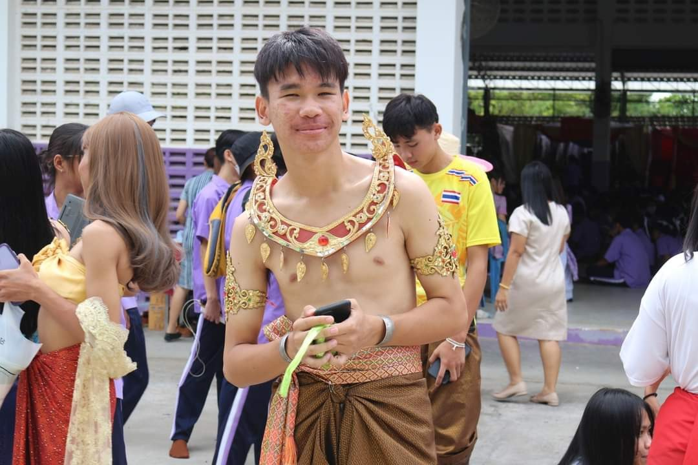
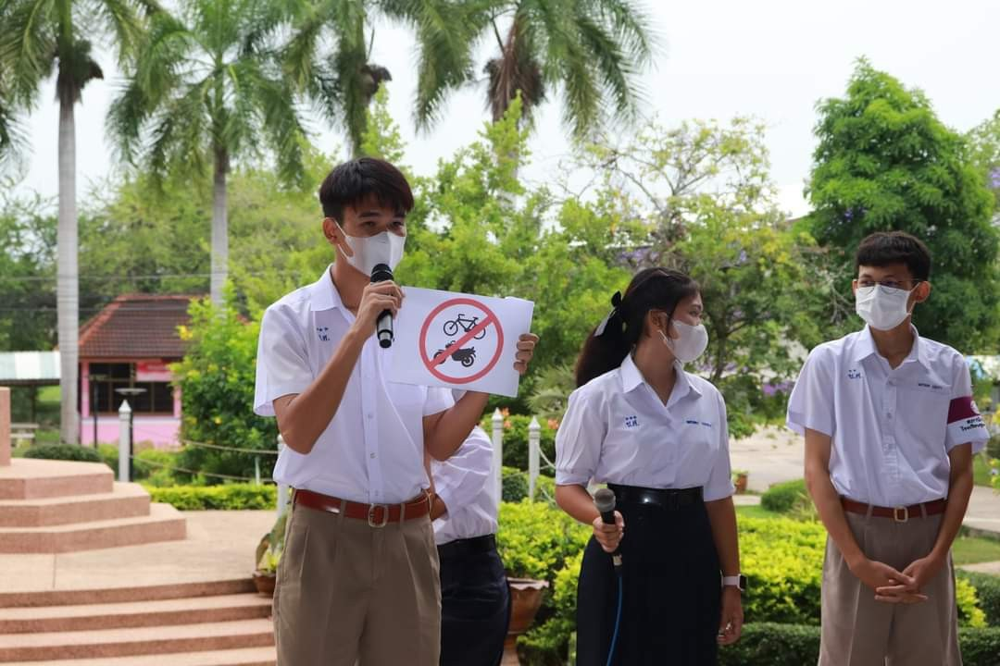
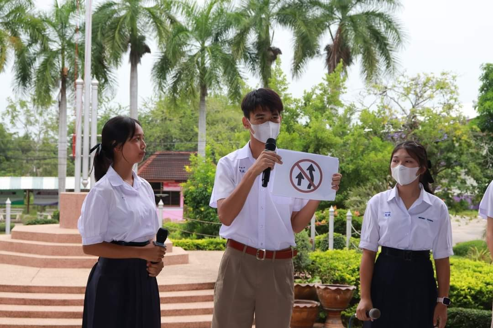
4 กรกฎาคม 2566
ได้รับหน้าที่การแสดงละครเป็นพระอภัยมณีเนื่องในวันภาษาไทยแห่งชาติ ทำให้ได้เรียนรู้การแก้ปัญหาเฉพาะหน้า ฝึกความอดทน รับผิดชอบต่อหน้าที่ที่ได้รับมาให้ดีที่สุด ทำให้เกิดความกล้าแสดงออกมากขึ้น
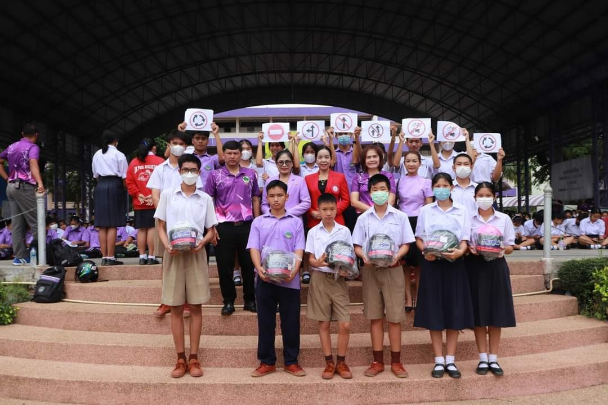